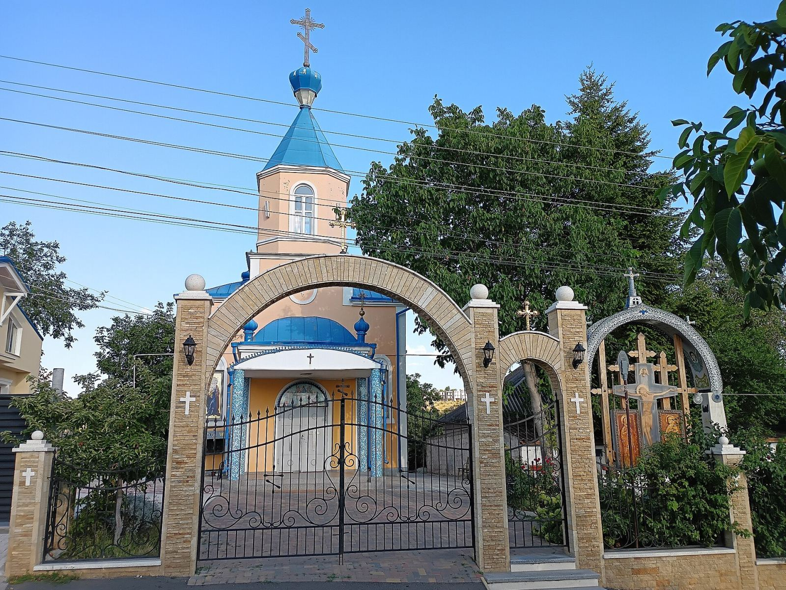
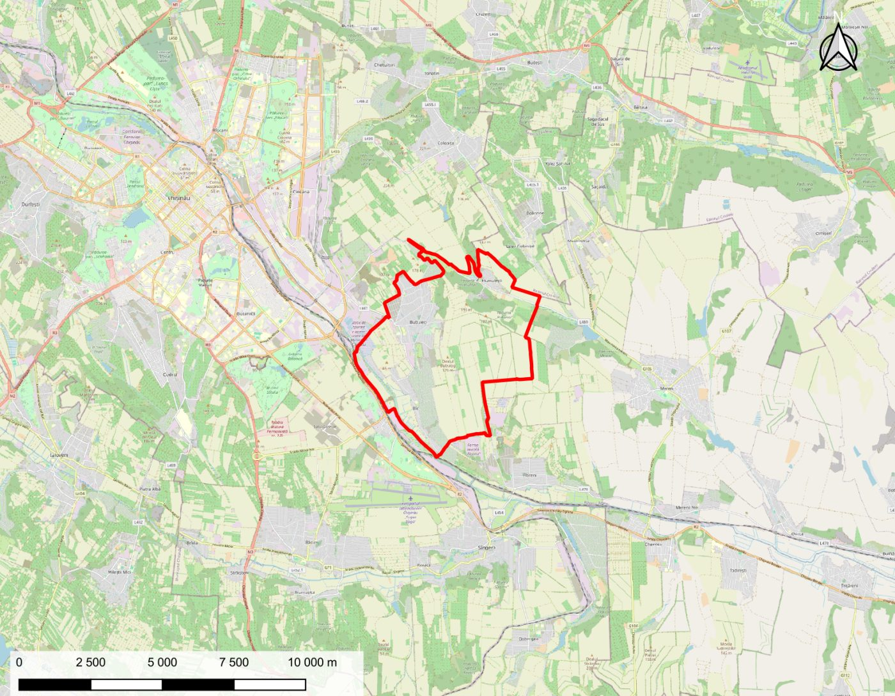

Capitolul 1 · Localizare
De ce Bubuieci?
Bubuieci este un sat din componența municipiului Chișinău, situat la sud-est de oraș, pe malul stâng al râului Bâc. Aici locuiesc 7 617 oameni (3 707 bărbați și 3 910 femei) pe 2 770 ha — aproximativ 275 locuitori/km².
O localitate între sat și oraș: casele cu grădini se învecinează cu stația de epurare a capitalei, zonele industriale și aeroportul.

Ecran complet ↗